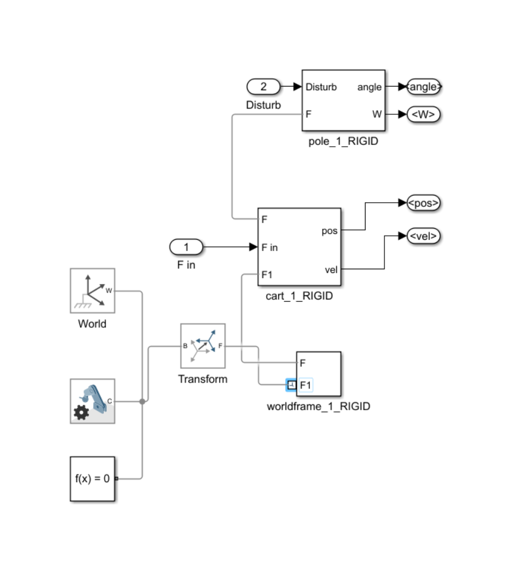
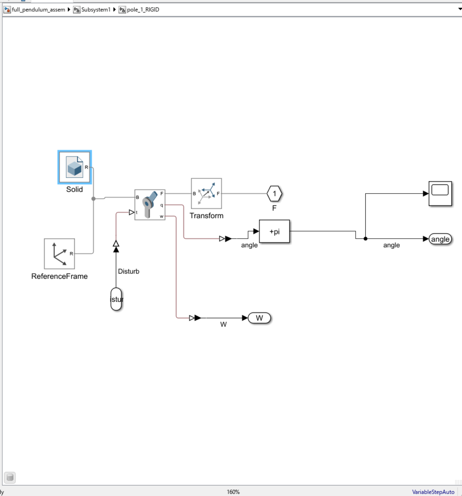
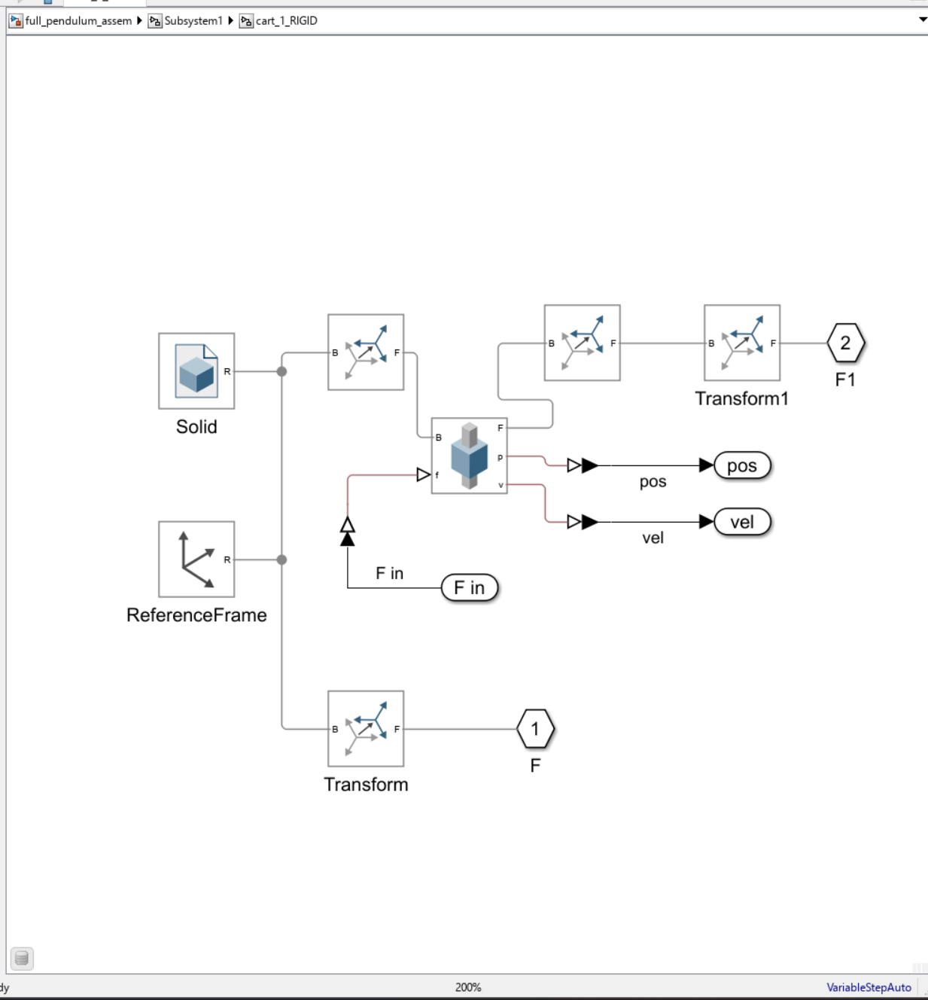
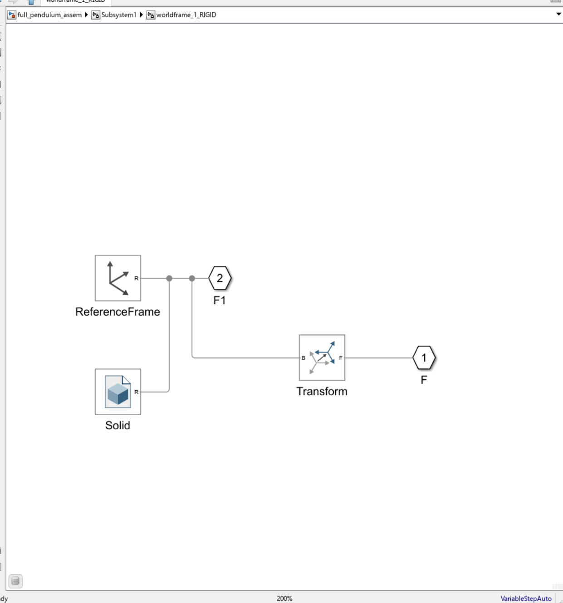
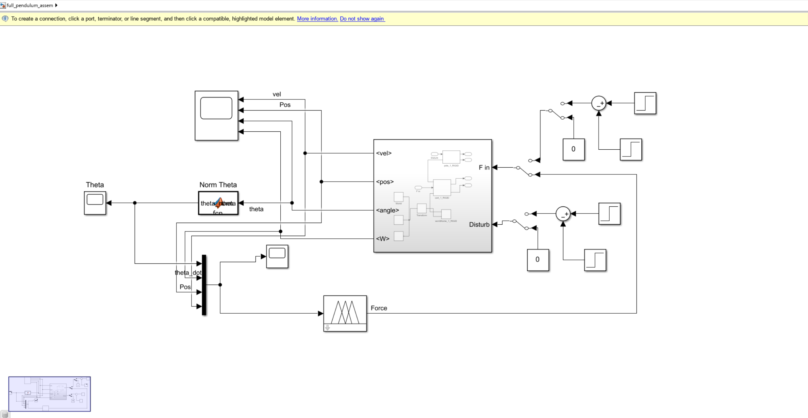
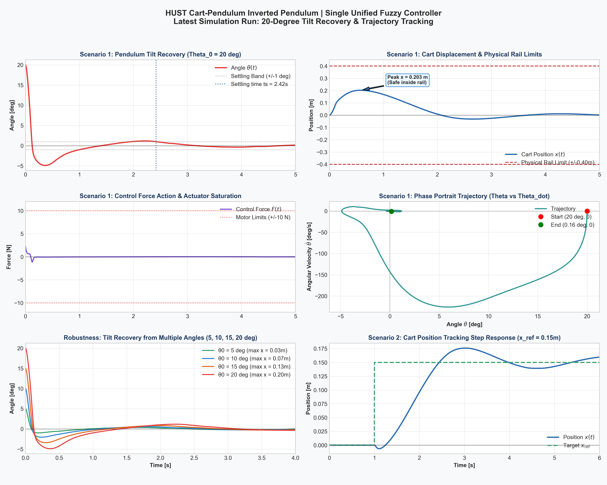

<!DOCTYPE html>
<html lang="vi" data-theme="dark">
<head>
  <meta charset="UTF-8">
  <meta name="viewport" content="width=device-width, initial-scale=1.0">
  <title>Fuzzy Logic Control for Inverted Pendulum | Simscape Multibody & Simulink</title>
  <link rel="icon" type="image/svg+xml" href="../../assets/images/favicon.svg">
  <link rel="stylesheet" href="../../assets/css/style.css">
  <!-- KaTeX CSS & JS for Math Equations -->
  <link rel="stylesheet" href="https://cdn.jsdelivr.net/npm/katex@0.16.8/dist/katex.min.css">
  <script defer src="https://cdn.jsdelivr.net/npm/katex@0.16.8/dist/katex.min.js"></script>
  <script defer src="https://cdn.jsdelivr.net/npm/katex@0.16.8/dist/contrib/auto-render.min.js" onload="renderMathInElement(document.body, {delimiters: [{left: '$$', right: '$$', display: true}, {left: '$', right: '$', display: false}]});"></script>
</head>
<body data-lang="vi">

  <!-- TOP MASTHEAD -->
  <header class="masthead">
    <div class="masthead__container">
      <div class="masthead__brand">
        <svg class="brand-icon" viewBox="0 0 32 32" fill="none">
          <circle cx="16" cy="16" r="11" stroke="#00f2fe" stroke-width="2" stroke-dasharray="4 2"/>
          <polygon points="16,8 23,20 9,20" stroke="#38bdf8" stroke-width="1.5" fill="rgba(56, 189, 248, 0.2)"/>
          <circle cx="16" cy="16" r="2.5" fill="#00f2fe"/>
        </svg>
        <span class="lang-vi">BÀI VIẾT KỸ THUẬT</span>
        <span class="lang-en">TECHNICAL ARTICLES</span>
        <span class="lang-de">TECHNISCHE ARTIKEL</span>
        <span class="brand-badge">BLOG</span>
      </div>

      <nav class="masthead__nav">
        <ul class="nav-links">
          <li><a href="../../index.html"><span class="lang-vi">Trang chủ</span><span class="lang-en">Home</span><span class="lang-de">Startseite</span></a></li>
          <li><a href="../../research.html"><span class="lang-vi">Nghiên cứu</span><span class="lang-en">Research</span><span class="lang-de">Forschung</span></a></li>
          <li><a href="../../portfolio.html"><span class="lang-vi">Dự án</span><span class="lang-en">Projects</span><span class="lang-de">Projekte</span></a></li>
          <li><a href="../../blog.html" class="active"><span class="lang-vi">Bài viết</span><span class="lang-en">Blog</span><span class="lang-de">Blog</span></a></li>
          <li><a href="../../cv.html"><span>CV</span></a></li>
        </ul>

        <div class="masthead__tools">
          <button id="site-search-btn" class="tool-btn" title="Tìm kiếm (Ctrl+K)">
            <svg width="15" height="15" viewBox="0 0 24 24" fill="none" stroke="currentColor" stroke-width="2"><circle cx="11" cy="11" r="8"/><line x1="21" y1="21" x2="16.65" y2="16.65"/></svg>
            <span class="kbd-shortcut">Ctrl K</span>
          </button>
          <!-- Language selector dropdown -->
          <div class="lang-dropdown-wrapper">
            <button id="lang-toggle-btn" class="tool-btn lang-tool-btn" title="Đổi ngôn ngữ / Select language / Sprache wählen" aria-expanded="false">
              <span id="lang-current-label">VI</span>
              <svg class="lang-caret" width="10" height="10" viewBox="0 0 24 24" fill="none" stroke="currentColor" stroke-width="2"><polyline points="6 9 12 15 18 9"/></svg>
            </button>
            <div class="lang-dropdown-menu" id="lang-dropdown-menu">
              <button type="button" class="lang-dropdown-item active" data-lang-val="vi">
                <span class="lang-flag">🇻🇳</span>
                <span class="lang-item-name">Tiếng Việt</span>
                <span class="lang-item-badge">VI</span>
              </button>
              <button type="button" class="lang-dropdown-item" data-lang-val="en">
                <span class="lang-flag">🇬🇧</span>
                <span class="lang-item-name">English</span>
                <span class="lang-item-badge">EN</span>
              </button>
              <button type="button" class="lang-dropdown-item" data-lang-val="de">
                <span class="lang-flag">🇩🇪</span>
                <span class="lang-item-name">Deutsch</span>
                <span class="lang-item-badge">DE</span>
              </button>
            </div>
          </div>
          <button id="theme-toggle-btn" class="tool-btn" title="Chuyển chế độ sáng/tối">
            <span id="theme-icon">
              <svg width="16" height="16" viewBox="0 0 24 24" fill="none" stroke="currentColor" stroke-width="2"><circle cx="12" cy="12" r="5"/><path d="M12 1v2M12 21v2M4.22 4.22l1.42 1.42M18.36 18.36l1.42 1.42M1 12h2M21 12h2M4.22 19.78l1.42-1.42M18.36 5.64l1.42-1.42"/></svg>
            </span>
          </button>
          <button id="mobile-menu-btn" class="tool-btn mobile-menu-btn" aria-label="Menu">
            <svg width="18" height="18" viewBox="0 0 24 24" fill="none" stroke="currentColor" stroke-width="2"><line x1="3" y1="12" x2="21" y2="12"/><line x1="3" y1="6" x2="21" y2="6"/><line x1="3" y1="18" x2="21" y2="18"/></svg>
          </button>
        </div>
      </nav>
    </div>
  </header>

  <!-- APP CONTAINER -->
  <div class="app-container">
    
    <!-- SIDEBAR -->
    <aside class="sidebar">
      <div class="profile-card">
        <div class="avatar-wrapper">
          <div class="avatar-pulse-ring"></div>
          
        </div>
        <div class="author-info">
          <h2 class="author-name">
            <span class="lang-vi">Đỗ Hiểu Vinh</span>
            <span class="lang-en">Đỗ Hiểu Vinh</span>
            <span class="lang-de">Đỗ Hiểu Vinh</span>
          </h2>
          <div class="author-handle">@vinhdo281 · HUST</div>
          <div class="author-status">
            <span class="status-dot"></span>
            <span class="lang-vi">POSTS: 2</span>
            <span class="lang-en">POSTS: 2</span>
            <span class="lang-de">BEITRÄGE: 2</span>
          </div>
          <p class="author-bio lang-vi">
            Tập trung nghiên cứu lý thuyết điều khiển tự động, thuật toán mờ thông minh, Simscape Multibody và MuJoCo physics.
          </p>
          <p class="author-bio lang-en">
            Specializing in intelligent control theory, fuzzy logic systems, Simscape Multibody robotics, and MuJoCo physics.
          </p>
          <p class="author-bio lang-de">
            Spezialisiert auf Regelungstheorie, intelligente Fuzzy-Systeme, Simscape Multibody Robotik und MuJoCo Physics.
          </p>
        </div>
        <div class="sidebar-divider"></div>

        <div class="contact-location">
          <svg viewBox="0 0 24 24" fill="none" stroke="currentColor" stroke-width="2"><path d="M21 10c0 7-9 13-9 13s-9-6-9-13a9 9 0 0 1 18 0z"/><circle cx="12" cy="10" r="3"/></svg>
          <span><span class="lang-vi">Hà Nội, Việt Nam</span><span class="lang-en">Hanoi, Vietnam</span><span class="lang-de">Hanoi, Vietnam</span></span>
        </div>

        <!-- Tech Social Icons Dock -->
        <div class="social-icons-dock">
          <a href="https://github.com/vinhdo281" target="_blank" rel="noopener" class="tech-icon-btn" data-tooltip="GitHub" aria-label="GitHub">
            <svg viewBox="0 0 24 24" fill="none" stroke="currentColor" stroke-width="2"><path d="M9 19c-5 1.5-5-2.5-7-3m14 6v-3.87a3.37 3.37 0 0 0-.94-2.61c3.14-.35 6.44-1.54 6.44-7A5.44 5.44 0 0 0 20 4.77 5.07 5.07 0 0 0 19.91 1S18.73.65 16 2.48a13.38 13.38 0 0 0-7 0C6.27.65 5.09 1 5.09 1A5.07 5.07 0 0 0 5 4.77a5.44 5.44 0 0 0-1.5 3.78c0 5.42 3.3 6.61 6.44 7A3.37 3.37 0 0 0 9 18.13V22"/></svg>
          </a>
          <a href="https://www.linkedin.com/in/vinhdo281" target="_blank" rel="noopener" class="tech-icon-btn" data-tooltip="LinkedIn" aria-label="LinkedIn">
            <svg viewBox="0 0 24 24" fill="none" stroke="currentColor" stroke-width="2"><path d="M16 8a6 6 0 0 1 6 6v7h-4v-7a2 2 0 0 0-2-2 2 2 0 0 0-2 2v7h-4v-7a6 6 0 0 1 6-6z"/><rect x="2" y="9" width="4" height="12"/><circle cx="4" cy="4" r="2"/></svg>
          </a>
          <a href="https://www.facebook.com/AlexDo281" target="_blank" rel="noopener" class="tech-icon-btn" data-tooltip="Facebook" aria-label="Facebook">
            <svg viewBox="0 0 24 24" fill="none" stroke="currentColor" stroke-width="2"><path d="M18 2h-3a5 5 0 0 0-5 5v3H7v4h3v8h4v-8h3l1-4h-4V7a1 1 0 0 1 1-1h3z"/></svg>
          </a>
          <a href="mailto:dohieuvinh@gmail.com" class="tech-icon-btn" data-tooltip="Email" aria-label="Email">
            <svg viewBox="0 0 24 24" fill="none" stroke="currentColor" stroke-width="2"><path d="M4 4h16c1.1 0 2 .9 2 2v12c0 1.1-.9 2-2 2H4c-1.1-0.2-.9-2-2V6c0-1.1.9-2 2-2z"/><polyline points="22,6 12,13 2,6"/></svg>
          </a>
        </div>
      </div>
    </aside>

    <!-- MAIN ARTICLE CONTENT -->
    <main class="main-content">
      <div class="article-container">

        <!-- ARTICLE HERO -->
        <article class="article-hero">
          <nav class="article-breadcrumb">
            <a href="../../index.html"><span class="lang-vi">Trang chủ</span><span class="lang-en">Home</span><span class="lang-de">Startseite</span></a>
            <span>/</span>
            <a href="../../blog.html"><span class="lang-vi">Bài viết</span><span class="lang-en">Blog</span><span class="lang-de">Blog</span></a>
            <span>/</span>
            <span><span class="lang-vi">Simscape & Điều Khiển Mờ</span><span class="lang-en">Simscape & Fuzzy Control</span><span class="lang-de">Simscape & Fuzzy-Regelung</span></span>
          </nav>
          
          <h1 class="article-title">
            <span class="lang-vi">Hướng Dẫn Từ A–Z: Thiết Kế Bộ Điều Khiển Mờ (Fuzzy Logic) Cho Con Lắc Ngược Trên Simscape Multibody & Simulink</span>
            <span class="lang-en">Comprehensive Guide: Designing a Fuzzy Logic Controller for an Inverted Pendulum on Simscape Multibody & Simulink</span>
            <span class="lang-de">Umfassender Leitfaden: Entwurf eines Fuzzy-Logic-Reglers für ein inverses Pendel auf Simscape Multibody & Simulink</span>
          </h1>
          
          <div class="article-meta">
            <span class="article-meta-item">
              <svg viewBox="0 0 24 24" fill="none" stroke-width="2"><rect x="3" y="4" width="18" height="18" rx="2" ry="2"/><line x1="16" y1="2" x2="16" y2="6"/><line x1="8" y1="2" x2="8" y2="6"/><line x1="3" y1="10" x2="21" y2="10"/></svg>
              <span class="lang-vi">08 Tháng 10, 2026</span>
              <span class="lang-en">October 08, 2026</span>
              <span class="lang-de">08. Oktober 2026</span>
            </span>
            <span class="article-meta-item">
              <svg viewBox="0 0 24 24" fill="none" stroke-width="2"><path d="M20 21v-2a4 4 0 0 0-4-4H8a4 4 0 0 0-4 4v2"/><circle cx="12" cy="7" r="4"/></svg>
              <span class="lang-vi">Nhóm Cơ Điện Tử · HUST</span>
              <span class="lang-en">Mechatronics Team · HUST</span>
              <span class="lang-de">Mechatronik-Team · HUST</span>
            </span>
            <span class="article-meta-item">
              <svg viewBox="0 0 24 24" fill="none" stroke-width="2"><circle cx="12" cy="12" r="10"/><polyline points="12 6 12 12 16 14"/></svg>
              <span class="lang-vi">18 Phút Đọc · Thực Hành Toàn Diện</span>
              <span class="lang-en">18 Min Read · Hands-on Practical</span>
              <span class="lang-de">18 Min Lesezeit · Umfassende Praxis</span>
            </span>
            <span class="card-type">SIMSCAPE // FUZZY MAMDANI</span>
          </div>
        </article>

        <!-- TABLE OF CONTENTS -->
        <div class="article-toc">
          <div class="article-toc-title">
            <svg width="16" height="16" viewBox="0 0 24 24" fill="none" stroke="currentColor" stroke-width="2"><line x1="8" y1="6" x2="21" y2="6"/><line x1="8" y1="12" x2="21" y2="12"/><line x1="8" y1="18" x2="21" y2="18"/><line x1="3" y1="6" x2="3.01" y2="6"/><line x1="3" y1="12" x2="3.01" y2="12"/><line x1="3" y1="18" x2="3.01" y2="18"/></svg>
            <span class="lang-vi">NỘI DUNG BÀI HƯỚNG DẪN (TOC)</span>
            <span class="lang-en">TABLE OF CONTENTS</span>
            <span class="lang-de">INHALTSVERZEICHNIS</span>
          </div>
          <ul class="article-toc-list">
            <li><a href="#sec-intro"><span class="lang-vi">1. Đặt Vấn Đề: Tại Sao Chọn Fuzzy Cho Con Lắc Ngược?</span><span class="lang-en">1. Problem Formulation: Why Choose Fuzzy Logic for Inverted Pendulum?</span><span class="lang-de">1. Problemstellung: Warum Fuzzy-Logic für das inverse Pendel?</span></a></li>
            <li><a href="#sec-simscape-import"><span class="lang-vi">2. Hướng Dẫn Add File CAD (.xml) & Database (.m) Bằng Lệnh Simscape</span><span class="lang-en">2. Importing CAD (.xml) & Database (.m) via Simscape Commands</span><span class="lang-de">2. Importieren von CAD (.xml) & Datenbank (.m) via Simscape</span></a></li>
            <li><a href="#sec-block-analysis"><span class="lang-vi">3. Mổ Xẻ Chi Tiết Từng Khối Cơ Quan (Tham Chiếu Ảnh Thực Tế)</span><span class="lang-en">3. Detailed Subsystem Dissection (Real Model Screenshots)</span><span class="lang-de">3. Detaillierte Subsystem-Analyse (Echte Modell-Screenshots)</span></a></li>
            <li><a href="#sec-fuzzy-design"><span class="lang-vi">4. Thiết Kế Bộ Mờ 16 Luật Từ A-Z Với MATLAB (Dựa Trên Fuzzy_moi.mlx)</span><span class="lang-en">4. Designing 16-Rule Fuzzy System with MATLAB (Based on Fuzzy_moi.mlx)</span><span class="lang-de">4. Entwurf des 16-Regeln-Fuzzy-Systems mit MATLAB (Basierend auf Fuzzy_moi.mlx)</span></a></li>
            <li><a href="#sec-simulink-wiring"><span class="lang-vi">5. Đấu Nối Sơ Đồ Hoàn Chỉnh Trong Simulink (full_pendulum_assem.slx)</span><span class="lang-en">5. Complete Simulink Wiring & Architecture (full_pendulum_assem.slx)</span><span class="lang-de">5. Vollständige Simulink-Verdrahtung & Architektur (full_pendulum_assem.slx)</span></a></li>
            <li><a href="#sec-results"><span class="lang-vi">6. Mô Phỏng & Đánh Giá Đáp Ứng Tại Góc Lớn 20° (Zero Cart Drift)</span><span class="lang-en">6. Simulation & Response Evaluation at Large 20° Angle (Zero Cart Drift)</span><span class="lang-de">6. Simulation & Reaktionsbewertung bei großem 20°-Winkel (Zero Cart Drift)</span></a></li>
            <li><a href="#sec-troubleshooting"><span class="lang-vi">7. Checklist Gỡ Lỗi & Kinh Nghiệm Thực Tế Cho Người Mới</span><span class="lang-en">7. Troubleshooting Checklist & Practical Tips for Beginners</span><span class="lang-de">7. Fehlersuche & Praxistipps für Einsteiger</span></a></li>
          </ul>
        </div>

        <!-- ARTICLE BODY -->
        <div class="article-content">

          <!-- SECTION 1 -->
          <section id="sec-intro">
            <h2>
              <span class="lang-vi"><span class="h2-badge">PHẦN 1</span> Đặt Vấn Đề: Tại Sao Chọn Fuzzy Cho Con Lắc Ngược?</span>
              <span class="lang-en"><span class="h2-badge">PART 1</span> Problem Formulation: Why Choose Fuzzy for Inverted Pendulum?</span>
              <span class="lang-de"><span class="h2-badge">TEIL 1</span> Problemstellung: Warum Fuzzy für das inverse Pendel?</span>
            </h2>
            
            <p class="lang-vi">
              Hệ thống con lắc ngược trên xe trượt (<strong>Inverted Pendulum on a Cart</strong>) là bài toán kinh điển trong ngành Điều khiển Tự động & Cơ điện tử. Đây là một <strong>hệ thống thiếu cơ cấu chấp hành (Underactuated System)</strong> tiêu biểu:
            </p>
            <p class="lang-en">
              The inverted pendulum on a cart system (<strong>Inverted Pendulum on a Cart</strong>) is a benchmark problem in Automatic Control & Mechatronics. It represents a classic <strong>Underactuated System</strong>:
            </p>
            <p class="lang-de">
              Das inverse Pendel auf einem Wagen (<strong>Inverted Pendulum on a Cart</strong>) ist ein Benchmark-Problem in der Regelungstechnik und Mechatronik. Es ist ein typisches <strong>unteraktuiertes System (Underactuated System)</strong>:
            </p>

            <ul class="lang-vi">
              <li><strong>2 Bậc tự do (2-DOF):</strong> Tọa độ tịnh tiến của thân xe $x(t)$ và góc nghiêng của thanh lắc $	heta(t)$.</li>
              <li><strong>1 Ngõ vào điều khiển duy nhất:</strong> Lực đẩy ngang $F(t)$ tác dụng trực tiếp lên thân xe. Khớp quay con lắc hoàn toàn tự do (passive joint, không có động cơ).</li>
            </ul>
            <ul class="lang-en">
              <li><strong>2 Degrees of Freedom (2-DOF):</strong> Cart translational position $x(t)$ and pendulum tilt angle $	heta(t)$.</li>
              <li><strong>Single Control Input:</strong> Horizontal force $F(t)$ applied directly to the cart body. The pendulum rotational joint is completely passive (no actuator).</li>
            </ul>
            <ul class="lang-de">
              <li><strong>2 Freiheitsgrade (2-DOF):</strong> Translationsposition des Wagens $x(t)$ und Auslenkungswinkel des Pendels $	heta(t)$.</li>
              <li><strong>Einziger Steuereingang:</strong> Horizontale Stellkraft $F(t)$ direkt auf den Wagen. Das Drehgelenk des Pendels ist völlig passiv (kein Motor).</li>
            </ul>

            <div class="callout callout-warning">
              <span class="callout-icon">⚠️</span>
              <div>
                <div class="lang-vi">
                  <strong>Cái bẫy của các bộ điều khiển tuyến tính (PID / LQR):</strong><br>
                  Khi thiết kế PID hoặc LQR, chúng ta bắt buộc phải tuyến tính hóa hệ phương trình động lực quanh điểm cân bằng đứng thẳng $	heta pprox 0$ dựa trên giả thiết góc nhỏ: $\sin	heta pprox 	heta$, $\cos	heta pprox 1$ và $\dot{	heta}^2 pprox 0$.<br>
                  Tuy nhiên, trong thực tế khi góc lệch ban đầu lớn ($	heta_0 \ge 15^\circ - 20^\circ$) hoặc khi hệ thống chịu lực va chạm mạnh, các đại lượng phi tuyến bùng nổ, ma trận Jacobi cố định mất hiệu lực khiến con lắc bị "văng" ra ngoài vùng thu hút (<em>basin of attraction</em>) và đổ gục hoàn toàn!
                </div>
                <div class="lang-en">
                  <strong>The Pitfall of Linear Controllers (PID / LQR):</strong><br>
                  When designing PID or LQR, dynamic equations must be linearized around the upright equilibrium point $	heta pprox 0$ based on small-angle assumptions: $\sin	heta pprox 	heta$, $\cos	heta pprox 1$, and $\dot{	heta}^2 pprox 0$.<br>
                  However, in practice when the initial tilt angle is large ($	heta_0 \ge 15^\circ - 20^\circ$) or under strong external disturbances, nonlinear terms explode, the fixed Jacobian matrix loses validity, pushing the pendulum outside its basin of attraction and causing catastrophic collapse!
                </div>
                <div class="lang-de">
                  <strong>Die Falle linearer Regler (PID / LQR):</strong><br>
                  Beim Entwurf von PID oder LQR müssen die Bewegungsgleichungen um die aufrechte Ruhelage $	heta pprox 0$ unter der Kleinwinkelnäherung linearisiert werden: $\sin	heta pprox 	heta$, $\cos	heta pprox 1$ und $\dot{	heta}^2 pprox 0$.<br>
                  In der Praxis jedoch, bei großen Anfangswinkeln ($	heta_0 \ge 15^\circ - 20^\circ$) oder starken Stoßeinwirkungen, dominieren Nichtlinearitäten, die konstante Jacobi-Matrix verliert ihre Gültigkeit und das Pendel kippt unweigerlich um!
                </div>
              </div>
            </div>

            <p class="lang-vi">
              <strong>Fuzzy Logic Controller (Bộ điều khiển mờ Mamdani)</strong> giải quyết triệt để rào cản này bằng cách mô phỏng trực giác phản xạ của con người:
            </p>
            <p class="lang-en">
              <strong>The Fuzzy Logic Controller (Mamdani FIS)</strong> overcomes this barrier by mimicking human intuitive heuristic reflexes:
            </p>
            <p class="lang-de">
              Der <strong>Fuzzy-Logic-Controller (Mamdani-FIS)</strong> überwindet diese Hürde, indem er die intuitive menschliche Reflexregelung nachbildet:
            </p>

            <ul class="lang-vi">
              <li>Không cần giải phương trình vi phân phi tuyến phức tạp hay xấp xỉ tuyến tính hóa.</li>
              <li>Tự động tăng cường lực cực đại khi góc ngã nguy cấp, đồng thời nhẹ nhàng giảm ga khi con lắc đang tự đà hồi hương.</li>
              <li>Kết hợp khéo léo cả 4 biến trạng thái $(	heta, \dot{	heta}, x, \dot{x})$ để con lắc đứng thẳng chuẩn xác và xe quay về đúng tâm ray, triệt tiêu hiện tượng trôi tự do (<strong>Zero Cart Drift</strong>).</li>
            </ul>
            <ul class="lang-en">
              <li>No need to solve complex nonlinear differential equations or rely on local linearization.</li>
              <li>Automatically ramps up maximal corrective force at critical tilts, while smoothly throttling down when the pendulum returns under momentum.</li>
              <li>Intelligently coordinates all 4 state variables $(	heta, \dot{	heta}, x, \dot{x})$ to stabilize the pendulum upright while returning the cart precisely to center (<strong>Zero Cart Drift</strong>).</li>
            </ul>
            <ul class="lang-de">
              <li>Keine Notwendigkeit zur Lösung komplexer nichtlinearer Differentialgleichungen oder lokalen Linearisierung.</li>
              <li>Regelt in kritischen Kipplagen automatisch mit maximaler Stellkraft gegen und drosselt sanft ab, sobald das Pendel zurückschwingt.</li>
              <li>Kombiniert geschickt alle 4 Zustandsgrößen $(	heta, \dot{	heta}, x, \dot{x})$ zur perfekten Aufrichtung und Rückführung des Wagens zur Schienenmitte (<strong>Zero Cart Drift</strong>).</li>
            </ul>
          </section>

          <!-- SECTION 2 -->
          <section id="sec-simscape-import">
            <h2>
              <span class="lang-vi"><span class="h2-badge">PHẦN 2</span> Hướng Dẫn Add File CAD (.xml) & Database (.m) Bằng Lệnh Simscape</span>
              <span class="lang-en"><span class="h2-badge">PART 2</span> Importing CAD (.xml) & Database (.m) via Simscape Commands</span>
              <span class="lang-de"><span class="h2-badge">TEIL 2</span> Importieren von CAD (.xml) & Datenbank (.m) via Simscape</span>
            </h2>

            <p class="lang-vi">
              Thay vì phải ghép từng khối hình học thô sơ bằng tay, trong các dự án thực tế tại HUST, mô hình cơ khí được thiết kế chuẩn xác từng milimet từ SolidWorks/Autodesk Inventor, sau đó xuất ra thông qua công cụ <strong>Simscape Multibody Link</strong> để thu được 2 tệp tin cốt lõi:
            </p>
            <p class="lang-en">
              Instead of manually placing primitive blocks, mechanical assemblies at HUST are designed with millimeter precision in SolidWorks/Autodesk Inventor and exported via <strong>Simscape Multibody Link</strong> into two core files:
            </p>
            <p class="lang-de">
              Anstatt primitive Geometrieblöcke manuell zu verknüpfen, werden mechanische Modelle an der HUST millimetergenau in SolidWorks/Autodesk Inventor modelliert und über <strong>Simscape Multibody Link</strong> in zwei Kern-Dateien exportiert:
            </p>

            <ol class="lang-vi">
              <li><code>full_pendulum_assem.xml</code>: Chứa toàn bộ cây cấu trúc hình học, các cụm khớp nối (Prismatic Joint, Revolute Joint) và các phép biến đổi không gian (RigidTransform).</li>
              <li><code>full_pendulum_assem_DataFile3.m</code>: Database chứa các giá trị số thực nghiệm gồm khối lượng ($M, m$), tọa độ khối tâm ($CoM$), và ma trận mô-men quán tính ($MoI$) được lưu trữ trong biến cấu trúc <code>smiData</code>.</li>
            </ol>
            <ol class="lang-en">
              <li><code>full_pendulum_assem.xml</code>: Contains the complete kinematic tree, joint definitions (Prismatic Joint, Revolute Joint), and spatial frames (RigidTransform).</li>
              <li><code>full_pendulum_assem_DataFile3.m</code>: Physical database containing mass values ($M, m$), center of mass coordinates ($CoM$), and moment of inertia matrices ($MoI$) stored in the <code>smiData</code> structure.</li>
            </ol>
            <ol class="lang-de">
              <li><code>full_pendulum_assem.xml</code>: Enthält den vollständigen kinematischen Baum, Gelenkdefinitionen (Schub- und Drehgelenke) und Koordinatentransformationen (RigidTransform).</li>
              <li><code>full_pendulum_assem_DataFile3.m</code>: Physikalische Datenbank mit Massenwerten ($M, m$), Schwerpunktkoordinaten ($CoM$) und Trägheitsmatrizen ($MoI$) in der Datenstruktur <code>smiData</code>.</li>
            </ol>

            <div class="callout callout-info">
              <span class="callout-icon">💡</span>
              <div>
                <div class="lang-vi">
                  <strong>Làm sao để Add 2 file này vào MATLAB/Simulink?</strong><br>
                  Bạn không cần mở từng file bằng tay, hãy sử dụng trực tiếp lệnh chuyên dụng của Simscape Multibody trong Command Window của MATLAB như hướng dẫn bên dưới.
                </div>
                <div class="lang-en">
                  <strong>How to import these 2 files into MATLAB/Simulink?</strong><br>
                  No manual file dragging needed; execute the specialized Simscape Multibody commands in the MATLAB Command Window as shown below.
                </div>
                <div class="lang-de">
                  <strong>Wie werden diese beiden Dateien in MATLAB/Simulink importiert?</strong><br>
                  Kein manuelles Ziehen nötig; führen Sie einfach die spezialisierten Simscape Multibody-Befehle im MATLAB Command Window aus.
                </div>
              </div>
            </div>

            <h3>
              <span class="lang-vi">Quy trình 3 bước thực hiện từ Command Window của MATLAB:</span>
              <span class="lang-en">3-Step Execution Workflow in MATLAB Command Window:</span>
              <span class="lang-de">3-Schritte-Ablauf im MATLAB Command Window:</span>
            </h3>

            <div class="code-box">
              <div class="code-header">
                <span class="code-lang">MATLAB Command Window</span>
                <button class="code-copy-btn" onclick="navigator.clipboard.writeText(this.closest('.code-box').querySelector('pre').innerText); alert('Copied code!');">Copy Code</button>
              </div>
              <pre class="code-pre"><code>%% STEP 1: Set working directory containing .xml and .m files
cd('d:\HUST\Site'); % Change to your local project folder

%% STEP 2: Use smimport to auto-generate Simulink Model from XML
% Analyzes the XML assembly structure and compiles a full Simscape block diagram
smimport('full_pendulum_assem.xml');

%% STEP 3: Load physical properties (mass, CoM, inertia) into Workspace
% CRITICAL: Without running this, Solid blocks trigger 'Undefined variable smiData'!
run('full_pendulum_assem_DataFile3.m');

disp('=== IMPORT SUCCESSFUL! smiData VARIABLE READY IN WORKSPACE ===');</code></pre>
            </div>

            <p class="lang-vi">
              Khi lệnh <code>smimport</code> thực thi xong, Simulink sẽ tự động bật lên một cửa sổ mô hình mới chứa một hệ thống con (Subsystem) mang cấu trúc vật lý thực tế của cụm cơ hệ con lắc.
            </p>
            <p class="lang-en">
              Once <code>smimport</code> completes execution, Simulink opens a brand new model containing a Subsystem accurately reproducing the physical mechanism.
            </p>
            <p class="lang-de">
              Sobald der Befehl <code>smimport</code> abgeschlossen ist, öffnet Simulink ein neues Modell mit einem Subsystem, das die reale mechanische Baugruppe abbildet.
            </p>
          </section>

          <!-- SECTION 3 -->
          <section id="sec-block-analysis">
            <h2>
              <span class="lang-vi"><span class="h2-badge">PHẦN 3</span> Mổ Xẻ Chi Tiết Từng Khối Cơ Quan (Tham Chiếu Ảnh Thực Tế)</span>
              <span class="lang-en"><span class="h2-badge">PART 3</span> Detailed Subsystem Dissection (Real Model Screenshots)</span>
              <span class="lang-de"><span class="h2-badge">TEIL 3</span> Detaillierte Subsystem-Analyse (Echte Modell-Screenshots)</span>
            </h2>

            <p class="lang-vi">
              Để người mới bắt đầu dễ dàng hình dung kiến trúc phân lớp, chúng ta sẽ lần lượt bóc tách từng khối bên trong mô hình đã được trích xuất từ <code>full_pendulum_assem.slx</code>:
            </p>
            <p class="lang-en">
              To help beginners understand the hierarchical topology, we dissect each core block inside the extracted model from <code>full_pendulum_assem.slx</code>:
            </p>
            <p class="lang-de">
              Um den hierarchischen Aufbau zu verdeutlichen, zerlegen wir nacheinander jeden Kernblock im extrahierten Modell <code>full_pendulum_assem.slx</code>:
            </p>

            <!-- HÌNH 1 -->
            <div class="figure-card">
              
              <div class="figure-caption">
                <div class="lang-vi"><strong>Hình 1:</strong> Tổng quan Subsystem cơ quan con lắc sau khi nhập khẩu bằng lệnh <code>smimport</code>.</div>
                <div class="lang-en"><strong>Figure 1:</strong> Overview of the imported pendulum mechanism subsystem generated by <code>smimport</code>.</div>
                <div class="lang-de"><strong>Abbildung 1:</strong> Gesamtübersicht des importierten Pendelmechanismus nach Ausführung von <code>smimport</code>.</div>
              </div>
            </div>

            <p class="lang-vi">Nhìn vào <strong>Hình 1</strong>, Subsystem trung tâm bao gồm:</p>
            <p class="lang-en">Referring to <strong>Figure 1</strong>, the central Subsystem includes:</p>
            <p class="lang-de">In <strong>Abbildung 1</strong> umfasst das zentrale Subsystem folgende Elemente:</p>

            <ul class="lang-vi">
              <li><strong>Cổng vào (Inputs):</strong> Cổng <code>F in</code> nhận lực tác động từ bộ điều khiển; cổng <code>Disturb</code> nhận lực/mô-men nhiễu tác động lên cơ hệ.</li>
              <li><strong>Cổng ra (Outputs):</strong> Xuất ra 4 trạng thái cảm biến: <code>angle</code> (góc lắc thô), <code>&lt;W&gt;</code> (vận tốc góc), <code>&lt;pos&gt;</code> (vị trí xe), <code>&lt;vel&gt;</code> (vận tốc xe).</li>
              <li><strong>Khối nền tảng:</strong> Khối <code>World</code> (hệ quy chiếu tĩnh vũ trụ), khối <code>Solver Configuration</code> (cấu hình giải số Simscape), và khối <code>Transform</code> nối giữa ray và thân xe.</li>
            </ul>
            <ul class="lang-en">
              <li><strong>Inputs:</strong> Port <code>F in</code> receives the control actuation force; port <code>Disturb</code> injects disturbance forces/torques onto the mechanism.</li>
              <li><strong>Outputs:</strong> Feeds 4 sensor states: <code>angle</code> (raw tilt angle), <code>&lt;W&gt;</code> (angular velocity), <code>&lt;pos&gt;</code> (cart position), <code>&lt;vel&gt;</code> (cart velocity).</li>
              <li><strong>Foundational Blocks:</strong> <code>World</code> reference frame, <code>Solver Configuration</code> block, and rigid <code>Transform</code> blocks between the rail and cart body.</li>
            </ul>
            <ul class="lang-de">
              <li><strong>Eingänge:</strong> Port <code>F in</code> empfängt die Reglerstellkraft; Port <code>Disturb</code> speist Stoßstörungen ein.</li>
              <li><strong>Ausgänge:</strong> Liefert 4 Sensorzustände: <code>angle</code> (Neigungswinkel), <code>&lt;W&gt;</code> (Winkelgeschwindigkeit), <code>&lt;pos&gt;</code> (Wagenposition), <code>&lt;vel&gt;</code> (Wagengeschwindigkeit).</li>
              <li><strong>Basiselemente:</strong> <code>World</code>-Referenzrahmen, <code>Solver Configuration</code> und Starrkörper-<code>Transform</code>-Blöcke.</li>
            </ul>

            <!-- HÌNH 2 -->
            <div class="figure-card">
              
              <div class="figure-caption">
                <div class="lang-vi"><strong>Hình 2:</strong> Chi tiết bên trong khối thanh lắc <code>pole_1_RIGID</code> với khớp quay Revolute Joint.</div>
                <div class="lang-en"><strong>Figure 2:</strong> Internal topology of pendulum pole block <code>pole_1_RIGID</code> with Revolute Joint.</div>
                <div class="lang-de"><strong>Abbildung 2:</strong> Innenansicht des Pendelstangen-Blocks <code>pole_1_RIGID</code> mit Drehgelenk.</div>
              </div>
            </div>

            <p class="lang-vi">Trong <strong>Hình 2 (pole_1_RIGID)</strong>, đây là nơi định nghĩa chuyển động quay của thanh lắc:</p>
            <p class="lang-en">In <strong>Figure 2 (pole_1_RIGID)</strong>, the rotational dynamics of the pendulum pole are defined:</p>
            <p class="lang-de">In <strong>Abbildung 2 (pole_1_RIGID)</strong> ist die Drehbewegung der Pendelstange definiert:</p>

            <ul class="lang-vi">
              <li><strong>Khối Solid:</strong> Đại diện cho thanh lắc vật lý, nhận tham số quán tính từ <code>smiData.Solid(1)</code> ($m = 0.01963	ext{ kg}$, $I_{	ext{com}} = 1.9733 	imes 10^{-4}	ext{ kg}\cdot	ext{m}^2$).</li>
              <li><strong>Khớp Revolute Joint:</strong> Nối giữa thân xe (Base) và thanh lắc (Follower). Cổng <code>q</code> đo góc quay, cổng <code>w</code> đo vận tốc góc. Cổng điều khiển mô-men <code>t</code> nhận tín hiệu nhiễu từ cổng <code>Disturb</code> qua khối <em>Simulink-PS Converter</em>.</li>
              <li><strong>Khối cộng <code>+pi</code>:</strong> Điểm đặc biệt quan trọng! Mặc định trong CAD, con lắc được vẽ ở tư thế buông thõng tự nhiên hướng xuống đất ($-\pi$). Khối cộng <code>+pi</code> này có nhiệm vụ tịnh tiến hệ tọa độ để vị trí <strong>thẳng đứng hướng lên trời</strong> trở thành điểm gốc $0	ext{ rad}$.</li>
            </ul>
            <ul class="lang-en">
              <li><strong>Solid Block:</strong> Physical pendulum pole parametrized from <code>smiData.Solid(1)</code> ($m = 0.01963	ext{ kg}$, $I_{	ext{com}} = 1.9733 	imes 10^{-4}	ext{ kg}\cdot	ext{m}^2$).</li>
              <li><strong>Revolute Joint:</strong> Connects cart body (Base) and pole (Follower). Port <code>q</code> senses angle, port <code>w</code> senses angular rate. Actuation torque port <code>t</code> receives disturbance from port <code>Disturb</code> via a <em>Simulink-PS Converter</em>.</li>
              <li><strong>Addition Block <code>+pi</code>:</strong> Vital implementation detail! CAD models typically draw the pendulum hanging vertically downward ($-\pi$). This <code>+pi</code> sum block shifts coordinates so the <strong>upright equilibrium</strong> corresponds exactly to $0	ext{ rad}$.</li>
            </ul>
            <ul class="lang-de">
              <li><strong>Solid-Block:</strong> Physische Pendelstange aus <code>smiData.Solid(1)</code> ($m = 0.01963	ext{ kg}$, $I_{	ext{com}} = 1.9733 	imes 10^{-4}	ext{ kg}\cdot	ext{m}^2$).</li>
              <li><strong>Revolute Joint:</strong> Drehgelenk zwischen Wagen (Base) und Stange (Follower). Port <code>q</code> misst den Winkel, Port <code>w</code> die Winkelgeschwindigkeit. Port <code>t</code> empfängt Störmomente über <em>Simulink-PS Converter</em>.</li>
              <li><strong>Additionsblock <code>+pi</code>:</strong> Entscheidendes Detail! In CAD hängt das Pendel nach unten ($-\pi$). Der <code>+pi</code>-Summierer verschiebt das Koordinatensystem, sodass die <strong>aufrechte Ruhelage</strong> bei exakt $0	ext{ rad}$ liegt.</li>
            </ul>

            <!-- HÌNH 3 -->
            <div class="figure-card">
              
              <div class="figure-caption">
                <div class="lang-vi"><strong>Hình 3:</strong> Chi tiết bên trong khối xe trượt <code>cart_1_RIGID</code> với khớp tịnh tiến Prismatic Joint.</div>
                <div class="lang-en"><strong>Figure 3:</strong> Internal details of cart block <code>cart_1_RIGID</code> with Prismatic Joint.</div>
                <div class="lang-de"><strong>Abbildung 3:</strong> Innenansicht des Wagenblocks <code>cart_1_RIGID</code> mit Schubgelenk (Prismatic Joint).</div>
              </div>
            </div>

            <p class="lang-vi">Trong <strong>Hình 3 (cart_1_RIGID)</strong>:</p>
            <p class="lang-en">In <strong>Figure 3 (cart_1_RIGID)</strong>:</p>
            <p class="lang-de">In <strong>Abbildung 3 (cart_1_RIGID)</strong>:</p>

            <ul class="lang-vi">
              <li><strong>Khối Solid:</strong> Thân xe nhôm trượt, tham số từ <code>smiData.Solid(2)</code> ($M = 0.05912	ext{ kg}$).</li>
              <li><strong>Khớp Prismatic Joint:</strong> Giới hạn chuyển động tịnh tiến dọc trục ray. Cổng lực đẩy <code>f</code> nhận lực $F$ từ bộ điều khiển. Các cổng cảm biến <code>p</code> và <code>v</code> lần lượt đo tọa độ vị trí xe ($pos$) và vận tốc xe ($vel$) rồi chuyển đổi qua khối <em>PS-Simulink Converter</em> để đưa ra ngoài.</li>
            </ul>
            <ul class="lang-en">
              <li><strong>Solid Block:</strong> Aluminum carriage cart body parametrized from <code>smiData.Solid(2)</code> ($M = 0.05912	ext{ kg}$).</li>
              <li><strong>Prismatic Joint:</strong> Constrains 1D linear sliding along the rail axis. Force input port <code>f</code> accepts control force $F$. Sensing ports <code>p</code> and <code>v</code> monitor cart displacement and linear velocity, routed via <em>PS-Simulink Converters</em>.</li>
            </ul>
            <ul class="lang-de">
              <li><strong>Solid-Block:</strong> Aluminium-Schlittenkörper aus <code>smiData.Solid(2)</code> ($M = 0.05912	ext{ kg}$).</li>
              <li><strong>Prismatic Joint:</strong> Führt die 1D-Translationsbewegung entlang der Schiene. Kraftport <code>f</code> empfängt Stellkraft $F$. Sensorports <code>p</code> und <code>v</code> messen Position und Geschwindigkeit.</li>
            </ul>

            <!-- HÌNH 4 -->
            <div class="figure-card">
              
              <div class="figure-caption">
                <div class="lang-vi"><strong>Hình 4:</strong> Chi tiết khối giá đỡ / ray trượt tĩnh <code>worldframe_1_RIGID</code> gắn cố định với hệ quy chiếu thế giới.</div>
                <div class="lang-en"><strong>Figure 4:</strong> Stationary rail support structure <code>worldframe_1_RIGID</code> anchored to the world frame.</div>
                <div class="lang-de"><strong>Abbildung 4:</strong> Feststehender Schienenkörper <code>worldframe_1_RIGID</code>, fest verankert im Weltkoordinatensystem.</div>
              </div>
            </div>
          </section>

          <!-- SECTION 4 -->
          <section id="sec-fuzzy-design">
            <h2>
              <span class="lang-vi"><span class="h2-badge">PHẦN 4</span> Thiết Kế Bộ Mờ 16 Luật Từ A-Z Với MATLAB (Dựa Trên Fuzzy_moi.mlx)</span>
              <span class="lang-en"><span class="h2-badge">PART 4</span> Designing 16-Rule Fuzzy System with MATLAB (Based on Fuzzy_moi.mlx)</span>
              <span class="lang-de"><span class="h2-badge">TEIL 4</span> Entwurf des 16-Regeln-Fuzzy-Systems mit MATLAB (Basierend auf Fuzzy_moi.mlx)</span>
            </h2>

            <p class="lang-vi">
              Dựa trên file thuật toán <code>Fuzzy_moi.mlx</code>, chúng ta sử dụng kiến trúc <strong>Single Unified Mamdani FIS</strong> với 4 ngõ vào và 1 ngõ ra lực.
            </p>
            <p class="lang-en">
              Based on <code>Fuzzy_moi.mlx</code>, we formulate a <strong>Single Unified Mamdani FIS</strong> architecture featuring 4 state inputs and 1 control force output.
            </p>
            <p class="lang-de">
              Basierend auf <code>Fuzzy_moi.mlx</code> entwickeln wir eine <strong>vereinheitlichte Mamdani-FIS-Architektur</strong> mit 4 Zustandseingängen und 1 Stellkraftausgang.
            </p>

            <h3>
              <span class="lang-vi">4.1 Cấu hình 4 Biến Ngõ Vào (Inputs)</span>
              <span class="lang-en">4.1 Configuration of 4 Input State Variables</span>
              <span class="lang-de">4.1 Konfiguration der 4 Zustandseingänge</span>
            </h3>
            <p class="lang-vi">
              Mỗi biến vào được mờ hóa thành 2 tập ngôn ngữ cơ bản: <strong>N (Negative - Âm)</strong> và <strong>P (Positive - Dương)</strong>. Nhằm tạo bề mặt điều khiển mượt mà, không bị giật cục hay gãy khúc, hàm dạng chữ Z (<code>zmf</code>) và chữ S (<code>smf</code>) được áp dụng:
            </p>
            <p class="lang-en">
              Each input is fuzzified into 2 linguistic sets: <strong>N (Negative)</strong> and <strong>P (Positive)</strong>. To yield an ultra-smooth control surface free of chattering or discontinuities, Z-shaped (<code>zmf</code>) and S-shaped (<code>smf</code>) spline membership functions are used:
            </p>
            <p class="lang-de">
              Jeder Eingang wird in 2 linguistische Terme unterteilt: <strong>N (Negativ)</strong> und <strong>P (Positiv)</strong>. Für eine ruckfreie, stetig differenzierbare Stellfläche kommen Z-förmige (<code>zmf</code>) und S-förmige (<code>smf</code>) Zugehörigkeitsfunktionen zum Einsatz:
            </p>

            <div class="table-wrap">
              <table class="tech-table">
                <thead>
                  <tr>
                    <th><span class="lang-vi">Biến ngõ vào</span><span class="lang-en">Input Variable</span><span class="lang-de">Eingangsgröße</span></th>
                    <th><span class="lang-vi">Ký hiệu</span><span class="lang-en">Symbol</span><span class="lang-de">Symbol</span></th>
                    <th><span class="lang-vi">Miền Universe</span><span class="lang-en">Universe Range</span><span class="lang-de">Definitionsbereich</span></th>
                    <th><span class="lang-vi">Vùng chuyển tiếp $[-L, +L]$</span><span class="lang-en">Transition Range $[-L, +L]$</span><span class="lang-de">Übergang $[-L, +L]$</span></th>
                    <th><span class="lang-vi">Loại MF</span><span class="lang-en">MF Type</span><span class="lang-de">MF-Typ</span></th>
                    <th><span class="lang-vi">Ý nghĩa phản xạ</span><span class="lang-en">Physical Heuristics</span><span class="lang-de">Physikalische Heuristik</span></th>
                  </tr>
                </thead>
                <tbody>
                  <tr>
                    <td><strong><span class="lang-vi">Góc nghiêng</span><span class="lang-en">Tilt Angle</span><span class="lang-de">Neigungswinkel</span></strong></td>
                    <td><code>Theta</code></td>
                    <td>$[-\pi, +\pi]\ 	ext{rad}$</td>
                    <td>$[-0.20, +0.20]\ 	ext{rad}\ (pprox \pm 11.5^\circ)$</td>
                    <td><span class="tech-badge-inline">zmf / smf</span></td>
                    <td>
                      <span class="lang-vi">Ưu tiên số 1: Con lắc nghiêng bên nào phải đẩy xe bên đó</span>
                      <span class="lang-en">Priority 1: Cart moves toward the falling direction of pendulum</span>
                      <span class="lang-de">Priorität 1: Wagen fährt zügig in Fallrichtung des Pendels</span>
                    </td>
                  </tr>
                  <tr>
                    <td><strong><span class="lang-vi">Vận tốc góc</span><span class="lang-en">Angular Velocity</span><span class="lang-de">Winkelgeschwindigkeit</span></strong></td>
                    <td><code>Theta_dot</code></td>
                    <td>$[-15, +15]\ 	ext{rad/s}$</td>
                    <td>$[-3.50, +3.50]\ 	ext{rad/s}$</td>
                    <td><span class="tech-badge-inline">zmf / smf</span></td>
                    <td>
                      <span class="lang-vi">Bắt xu hướng: Đang ngã nhanh hay đang tự vung về cân bằng</span>
                      <span class="lang-en">Trend tracking: Detects rapidly tipping vs. self-recovering momentum</span>
                      <span class="lang-de">Trendverfolgung: Erkennt schnelles Umkippen vs. Rückschwingen</span>
                    </td>
                  </tr>
                  <tr>
                    <td><strong><span class="lang-vi">Vị trí xe</span><span class="lang-en">Cart Position</span><span class="lang-de">Wagenposition</span></strong></td>
                    <td><code>X</code></td>
                    <td>$[-0.50, +0.50]\ 	ext{m}$</td>
                    <td>$[-0.25, +0.25]\ 	ext{m}$</td>
                    <td><span class="tech-badge-inline">zmf / smf</span></td>
                    <td>
                      <span class="lang-vi">Nhận biết xe đang dạt sang trái hay phải so với tâm ray</span>
                      <span class="lang-en">Monitors left/right cart deviation relative to rail origin</span>
                      <span class="lang-de">Überwacht Links-/Rechtsauslenkung relativ zum Nullpunkt</span>
                    </td>
                  </tr>
                  <tr>
                    <td><strong><span class="lang-vi">Vận tốc xe</span><span class="lang-en">Cart Velocity</span><span class="lang-de">Wagengeschwindigkeit</span></strong></td>
                    <td><code>X_dot</code></td>
                    <td>$[-2.0, +2.0]\ 	ext{m/s}$</td>
                    <td>$[-0.50, +0.50]\ 	ext{m/s}$</td>
                    <td><span class="tech-badge-inline">zmf / smf</span></td>
                    <td>
                      <span class="lang-vi">Khống chế trôi trượt tự do (Cart Drift)</span>
                      <span class="lang-en">Actively dampens uncontrolled drifting (Cart Drift Suppression)</span>
                      <span class="lang-de">Dämpft unkontrolliertes Abdriften (Zero Cart Drift)</span>
                    </td>
                  </tr>
                </tbody>
              </table>
            </div>

            <h3>
              <span class="lang-vi">4.2 Cấu hình Biến Ngõ Ra (Output — Lực $F$)</span>
              <span class="lang-en">4.2 Output Configuration (Control Force $F$)</span>
              <span class="lang-de">4.2 Ausgangskonfiguration (Stellkraft $F$)</span>
            </h3>
            <p class="lang-vi">
              Ngõ ra là lực $F$ tác dụng vào thân xe trên dải $[-12, +12]\ 	ext{N}$, được định nghĩa bằng 4 hàm chuông <strong>`gbellmf`</strong>:
            </p>
            <p class="lang-en">
              The output control force $F$ operates within $[-12, +12]\ 	ext{N}$, defined using 4 generalized bell-shaped functions (<strong>`gbellmf`</strong>):
            </p>
            <p class="lang-de">
              Die Ausgangsstellkraft $F$ liegt im Bereich $[-12, +12]\ 	ext{N}$ und wird durch 4 Glockenkurven (<strong>`gbellmf`</strong>) moduliert:
            </p>

            <ul class="lang-vi">
              <li><strong>NL (Negative Large — Âm Lớn):</strong> Tâm $c = -10	ext{ N}$, độ rộng $a = 3.0	ext{ N}$, độ dốc $b = 2$.</li>
              <li><strong>NM (Negative Medium — Âm Vừa):</strong> Tâm $c = -7	ext{ N}$, độ rộng $a = 2.5	ext{ N}$, độ dốc $b = 2$.</li>
              <li><strong>PM (Positive Medium — Dương Vừa):</strong> Tâm $c = +7	ext{ N}$, độ rộng $a = 2.5	ext{ N}$, độ dốc $b = 2$.</li>
              <li><strong>PL (Positive Large — Dương Lớn):</strong> Tâm $c = +10	ext{ N}$, độ rộng $a = 3.0	ext{ N}$, độ dốc $b = 2$.</li>
            </ul>
            <ul class="lang-en">
              <li><strong>NL (Negative Large):</strong> Center $c = -10	ext{ N}$, width $a = 3.0	ext{ N}$, slope $b = 2$.</li>
              <li><strong>NM (Negative Medium):</strong> Center $c = -7	ext{ N}$, width $a = 2.5	ext{ N}$, slope $b = 2$.</li>
              <li><strong>PM (Positive Medium):</strong> Center $c = +7	ext{ N}$, width $a = 2.5	ext{ N}$, slope $b = 2$.</li>
              <li><strong>PL (Positive Large):</strong> Center $c = +10	ext{ N}$, width $a = 3.0	ext{ N}$, slope $b = 2$.</li>
            </ul>
            <ul class="lang-de">
              <li><strong>NL (Negativ Groß):</strong> Zentrum $c = -10	ext{ N}$, Breite $a = 3.0	ext{ N}$, Steigung $b = 2$.</li>
              <li><strong>NM (Negativ Mittel):</strong> Zentrum $c = -7	ext{ N}$, Breite $a = 2.5	ext{ N}$, Steigung $b = 2$.</li>
              <li><strong>PM (Positiv Mittel):</strong> Zentrum $c = +7	ext{ N}$, Breite $a = 2.5	ext{ N}$, Steigung $b = 2$.</li>
              <li><strong>PL (Positiv Groß):</strong> Zentrum $c = +10	ext{ N}$, Breite $a = 3.0	ext{ N}$, Steigung $b = 2$.</li>
            </ul>

            <h3>
              <span class="lang-vi">4.3 Bảng 16 Luật Mamdani Toàn Vẹn ($2^4 = 16$ Tổ Hợp)</span>
              <span class="lang-en">4.3 Complete 16-Rule Mamdani Rule Base ($2^4 = 16$)</span>
              <span class="lang-de">4.3 Vollständige 16-Regeln-Mamdani-Matrix ($2^4 = 16$)</span>
            </h3>
            <p class="lang-vi">
              Với 4 ngõ vào $	imes$ 2 trạng thái mờ, không gian tổ hợp có đúng $2^4 = 16$ luật, hoàn toàn không có điểm mù trong toàn bộ không gian trạng thái:
            </p>
            <p class="lang-en">
              With 4 inputs $	imes$ 2 fuzzy partitions, the state space encompasses exactly $2^4 = 16$ combinations, eliminating dead zones entirely:
            </p>
            <p class="lang-de">
              Mit 4 Eingängen $	imes$ 2 Fuzzy-Mengen umfasst die Regelbasis exakt $2^4 = 16$ Regeln ohne tote Zonen im gesamten Zustandsraum:
            </p>

            <div class="table-wrap">
              <table class="tech-table">
                <thead>
                  <tr>
                    <th>STT</th>
                    <th>$	heta$</th>
                    <th>$\dot{	heta}$</th>
                    <th>$x$</th>
                    <th>$\dot{x}$</th>
                    <th><span class="lang-vi">Lực $F$</span><span class="lang-en">Force $F$</span><span class="lang-de">Kraft $F$</span></th>
                    <th><span class="lang-vi">Luận giải cơ học chi tiết</span><span class="lang-en">Physical Reasoning</span><span class="lang-de">Regelungstechnische Begründung</span></th>
                  </tr>
                </thead>
                <tbody>
                  <tr><td><strong>R01</strong></td><td>N</td><td>N</td><td>N</td><td>N</td><td><strong>NL</strong></td><td><span class="lang-vi">Khẩn cấp cực đại: Nghiêng trái, văng trái, xe lệch trái $
ightarrow$ Đạp hết ga trái ($-10	ext{N}$).</span><span class="lang-en">Extreme emergency: Left tilt, swinging left, cart displaced left $
ightarrow$ Full left force ($-10	ext{N}$).</span><span class="lang-de">Höchste Dringlichkeit: Linksauslenkung, Drehimpuls links, Wagen links $
ightarrow$ Volle Kraft links ($-10	ext{N}$).</span></td></tr>
                  <tr><td><strong>R02</strong></td><td>N</td><td>N</td><td>N</td><td>P</td><td><strong>NL</strong></td><td><span class="lang-vi">Nghiêng trái + văng trái $
ightarrow$ Ưu tiên sống còn là cứu góc nghiêng, xuất lực NL.</span><span class="lang-en">Left tilt + swinging left $
ightarrow$ Top priority is saving the tilt angle, output NL.</span><span class="lang-de">Linksauslenkung + Drehimpuls links $
ightarrow$ Höchste Priorität hat Pendelaufrichtung, NL ausgeben.</span></td></tr>
                  <tr><td><strong>R03</strong></td><td>N</td><td>N</td><td>P</td><td>N</td><td><strong>NL</strong></td><td><span class="lang-vi">Dù xe lệch phải, góc lắc vẫn đang ngã trái $
ightarrow$ Xuất lực NL để hứng trọng tâm.</span><span class="lang-en">Although cart is right, pole is falling left $
ightarrow$ Apply NL to catch the center of gravity.</span><span class="lang-de">Wagen steht rechts, aber Pendel fällt nach links $
ightarrow$ NL schalten, um Schwerpunkt aufzufangen.</span></td></tr>
                  <tr><td><strong>R04</strong></td><td>N</td><td>N</td><td>P</td><td>P</td><td><strong>NM</strong></td><td><span class="lang-vi">Xe đang ở bên phải và trôi sang phải $
ightarrow$ Xe còn dư địa, dùng lực âm vừa ($-7	ext{N}$) để chống xốc.</span><span class="lang-en">Cart is on right moving right $
ightarrow$ Adequate runway, apply moderate negative force ($-7	ext{N}$).</span><span class="lang-de">Wagen rechts und driftet nach rechts $
ightarrow$ Sanfte Bremskraft ($-7	ext{N}$) gegen Rucken.</span></td></tr>
                  <tr><td><strong>R05</strong></td><td>N</td><td>P</td><td>N</td><td>N</td><td><strong>NM</strong></td><td><span class="lang-vi">Lệch trái nhưng <em>đang tự vung về bên phải</em> ($\dot{	heta} > 0$) $
ightarrow$ Giảm xuống NM để hãm êm.</span><span class="lang-en">Tilted left but <em>swinging back right</em> ($\dot{	heta} > 0$) $
ightarrow$ Drop to NM for smooth damping.</span><span class="lang-de">Nach links geneigt, schwingt aber <em>selbsttätig nach rechts</em> $
ightarrow$ Drosseln auf NM.</span></td></tr>
                  <tr><td><strong>R06</strong></td><td>N</td><td>P</td><td>N</td><td>P</td><td><strong>NM</strong></td><td><span class="lang-vi">Con lắc tự hồi về, xe hướng về tâm ray $
ightarrow$ Dùng lực vừa NM.</span><span class="lang-en">Pendulum returning, cart heading toward center $
ightarrow$ Apply moderate force NM.</span><span class="lang-de">Pendel kehrt zurück, Wagen steuert Schienenmitte an $
ightarrow$ Moderate Stellkraft NM.</span></td></tr>
                  <tr><td><strong>R07</strong></td><td>N</td><td>P</td><td>P</td><td>N</td><td><strong>NM</strong></td><td><span class="lang-vi">Con lắc tự hồi về, xe bên phải $
ightarrow$ Duy trì lực âm nhẹ để triệt dao động.</span><span class="lang-en">Pendulum returning, cart on right $
ightarrow$ Maintain mild negative force to damp oscillations.</span><span class="lang-de">Pendel kehrt zurück, Wagen rechts $
ightarrow$ Leichte Gegenkraft zur Schwingungsdämpfung.</span></td></tr>
                  <tr><td><strong>R08</strong></td><td>N</td><td>P</td><td>P</td><td>P</td><td><strong>NM</strong></td><td><span class="lang-vi">Con lắc tự hồi về, xe lệch phải $
ightarrow$ Lực âm vừa đủ cân bằng cả hai.</span><span class="lang-en">Pendulum recovering, cart right $
ightarrow$ Moderate negative force balances both states.</span><span class="lang-de">Pendel kehrt zurück, Wagen rechts $
ightarrow$ Moderate Kraft balanciert beides aus.</span></td></tr>
                  <tr><td><strong>R09</strong></td><td>P</td><td>N</td><td>N</td><td>N</td><td><strong>PM</strong></td><td><span class="lang-vi">Lệch phải nhưng <em>đang tự vung về bên trái</em> ($\dot{	heta} < 0$) $
ightarrow$ Dùng lực dương vừa ($+7	ext{N}$) đón đầu.</span><span class="lang-en">Tilted right but <em>swinging back left</em> ($\dot{	heta} < 0$) $
ightarrow$ Moderate positive force ($+7	ext{N}$).</span><span class="lang-de">Nach rechts geneigt, schwingt aber <em>nach links</em> $
ightarrow$ Moderate positive Kraft ($+7	ext{N}$).</span></td></tr>
                  <tr><td><strong>R10</strong></td><td>P</td><td>N</td><td>N</td><td>P</td><td><strong>PM</strong></td><td><span class="lang-vi">Con lắc tự quay về, xe chạy phải $
ightarrow$ Đón nhẹ bằng PM.</span><span class="lang-en">Pendulum self-recovering, cart heading right $
ightarrow$ Soft capture with PM.</span><span class="lang-de">Pendel schwingt ein, Wagen fährt rechts $
ightarrow$ Sanftes Abfangen mit PM.</span></td></tr>
                  <tr><td><strong>R11</strong></td><td>P</td><td>N</td><td>P</td><td>N</td><td><strong>PM</strong></td><td><span class="lang-vi">Con lắc tự quay về $
ightarrow$ PM.</span><span class="lang-en">Pendulum self-recovering $
ightarrow$ PM.</span><span class="lang-de">Pendel schwingt selbsttätig ein $
ightarrow$ PM.</span></td></tr>
                  <tr><td><strong>R12</strong></td><td>P</td><td>N</td><td>P</td><td>P</td><td><strong>PM</strong></td><td><span class="lang-vi">Con lắc tự quay về, xe lệch phải $
ightarrow$ Lực dương vừa giúp con lắc đứng thẳng không bị giật.</span><span class="lang-en">Pendulum self-recovering, cart right $
ightarrow$ Moderate positive force stabilizes without overshoot.</span><span class="lang-de">Pendel kehrt zurück, Wagen rechts $
ightarrow$ Moderate positive Kraft stabilisiert ruckfrei.</span></td></tr>
                  <tr><td><strong>R13</strong></td><td>P</td><td>P</td><td>N</td><td>N</td><td><strong>PL</strong></td><td><span class="lang-vi">Nghiêng phải + văng mạnh sang phải $
ightarrow$ Bơm hết ga dương ($+10	ext{N}$) để luồn xe đỡ lấy.</span><span class="lang-en">Right tilt + swinging right $
ightarrow$ Maximum positive force ($+10	ext{N}$) to drive cart beneath.</span><span class="lang-de">Rechtsneigung + Drehimpuls rechts $
ightarrow$ Maximale Vorwärtskraft ($+10	ext{N}$) zum Unterfahren.</span></td></tr>
                  <tr><td><strong>R14</strong></td><td>P</td><td>P</td><td>N</td><td>P</td><td><strong>PL</strong></td><td><span class="lang-vi">Ngã phải + văng phải $
ightarrow$ Xuất lực dương cực đại PL để đuổi kịp tốc độ đổ.</span><span class="lang-en">Falling right + swinging right $
ightarrow$ Output maximal PL force to catch up with falling rate.</span><span class="lang-de">Kippt rechts + Drehimpuls rechts $
ightarrow$ Maximale Kraft PL, um Fallgeschwindigkeit einzuholen.</span></td></tr>
                  <tr><td><strong>R15</strong></td><td>P</td><td>P</td><td>P</td><td>N</td><td><strong>PL</strong></td><td><span class="lang-vi">Ngã phải + văng phải, dù xe gần biên phải vẫn ưu tiên cứu góc nghiêng trước.</span><span class="lang-en">Falling right + swinging right, tilt stabilization takes absolute priority over cart position.</span><span class="lang-de">Kippt rechts + Drehimpuls rechts: Pendelrettung hat absolute Priorität vor Wagenposition.</span></td></tr>
                  <tr><td><strong>R16</strong></td><td>P</td><td>P</td><td>P</td><td>P</td><td><strong>PL</strong></td><td><span class="lang-vi">Khẩn cấp cực đại bên phải: Cả 4 trạng thái đều dương $
ightarrow$ Đạp hết ga dương ($+10	ext{N}$).</span><span class="lang-en">Extreme emergency right: All 4 states positive $
ightarrow$ Full positive thrust ($+10	ext{N}$).</span><span class="lang-de">Höchste Dringlichkeit rechts: Alle 4 Zustände positiv $
ightarrow$ Voller Schub rechts ($+10	ext{N}$).</span></td></tr>
                </tbody>
              </table>
            </div>

            <h3>
              <span class="lang-vi">4.4 Mã Nguồn Tự Động Khởi Tạo & Lưu File FIS (`cartpole_16rules.fis`)</span>
              <span class="lang-en">4.4 Automated Source Script to Generate & Export FIS (`cartpole_16rules.fis`)</span>
              <span class="lang-de">4.4 Automatischer Quellcode zur FIS-Generierung & Speicherung (`cartpole_16rules.fis`)</span>
            </h3>

            <div class="code-box">
              <div class="code-header">
                <span class="code-lang">MATLAB Live Script / Script (.m)</span>
                <button class="code-copy-btn" onclick="navigator.clipboard.writeText(this.closest('.code-box').querySelector('pre').innerText); alert('Copied code!');">Copy Code</button>
              </div>
              <pre class="code-pre"><code>%% ============================================================
%%  FUZZY LOGIC CONTROLLER - CART-PENDULUM (HUST)
%%  Single Unified Mamdani FIS | 4 Inputs x 2 MFs = 16 Rules
%% ============================================================
clc; clear; close all;

% Initialize Mamdani FIS structure
fis = mamfis('NumInputs', 4, 'NumInputMFs', 2, ...
             'NumOutputs', 1, 'NumOutputMFs', 4, ...
             'AddRule', 'none');

% 1. Setup 4 State Inputs
fis.Inputs(1).Name = 'Theta';     fis.Inputs(1).Range = [-pi, pi];
fis.Inputs(1).MembershipFunctions(1).Name = 'N'; fis.Inputs(1).MembershipFunctions(1).Type = 'zmf'; fis.Inputs(1).MembershipFunctions(1).Parameters = [-0.20, 0.20];
fis.Inputs(1).MembershipFunctions(2).Name = 'P'; fis.Inputs(1).MembershipFunctions(2).Type = 'smf'; fis.Inputs(1).MembershipFunctions(2).Parameters = [-0.20, 0.20];

fis.Inputs(2).Name = 'Theta_dot'; fis.Inputs(2).Range = [-15, 15];
fis.Inputs(2).MembershipFunctions(1).Name = 'N'; fis.Inputs(2).MembershipFunctions(1).Type = 'zmf'; fis.Inputs(2).MembershipFunctions(1).Parameters = [-3.50, 3.50];
fis.Inputs(2).MembershipFunctions(2).Name = 'P'; fis.Inputs(2).MembershipFunctions(2).Type = 'smf'; fis.Inputs(2).MembershipFunctions(2).Parameters = [-3.50, 3.50];

fis.Inputs(3).Name = 'X';         fis.Inputs(3).Range = [-0.5, 0.5];
fis.Inputs(3).MembershipFunctions(1).Name = 'N'; fis.Inputs(3).MembershipFunctions(1).Type = 'zmf'; fis.Inputs(3).MembershipFunctions(1).Parameters = [-0.25, 0.25];
fis.Inputs(3).MembershipFunctions(2).Name = 'P'; fis.Inputs(3).MembershipFunctions(2).Type = 'smf'; fis.Inputs(3).MembershipFunctions(2).Parameters = [-0.25, 0.25];

fis.Inputs(4).Name = 'X_dot';     fis.Inputs(4).Range = [-2, 2];
fis.Inputs(4).MembershipFunctions(1).Name = 'N'; fis.Inputs(4).MembershipFunctions(1).Type = 'zmf'; fis.Inputs(4).MembershipFunctions(1).Parameters = [-0.50, 0.50];
fis.Inputs(4).MembershipFunctions(2).Name = 'P'; fis.Inputs(4).MembershipFunctions(2).Type = 'smf'; fis.Inputs(4).MembershipFunctions(2).Parameters = [-0.50, 0.50];

% 2. Setup Output Variable: Force
fis.Outputs(1).Name = 'Force';    fis.Outputs(1).Range = [-12, 12];
fis.Outputs(1).MembershipFunctions(1).Name = 'NL'; fis.Outputs(1).MembershipFunctions(1).Type = 'gbellmf'; fis.Outputs(1).MembershipFunctions(1).Parameters = [3.0, 2, -10];
fis.Outputs(1).MembershipFunctions(2).Name = 'NM'; fis.Outputs(1).MembershipFunctions(2).Type = 'gbellmf'; fis.Outputs(1).MembershipFunctions(2).Parameters = [2.5, 2, -7];
fis.Outputs(1).MembershipFunctions(3).Name = 'PM'; fis.Outputs(1).MembershipFunctions(3).Type = 'gbellmf'; fis.Outputs(1).MembershipFunctions(3).Parameters = [2.5, 2,  7];
fis.Outputs(1).MembershipFunctions(4).Name = 'PL'; fis.Outputs(1).MembershipFunctions(4).Type = 'gbellmf'; fis.Outputs(1).MembershipFunctions(4).Parameters = [3.0, 2,  10];

% 3. Define 16 Mamdani Heuristic Rules
rules = [
    "If Theta is N and Theta_dot is N and X is N and X_dot is N then Force is NL"
    "If Theta is N and Theta_dot is N and X is N and X_dot is P then Force is NL"
    "If Theta is N and Theta_dot is N and X is P and X_dot is N then Force is NL"
    "If Theta is N and Theta_dot is N and X is P and X_dot is P then Force is NM"
    "If Theta is N and Theta_dot is P and X is N and X_dot is N then Force is NM"
    "If Theta is N and Theta_dot is P and X is N and X_dot is P then Force is NM"
    "If Theta is N and Theta_dot is P and X is P and X_dot is N then Force is NM"
    "If Theta is N and Theta_dot is P and X is P and X_dot is P then Force is NM"
    "If Theta is P and Theta_dot is N and X is N and X_dot is N then Force is PM"
    "If Theta is P and Theta_dot is N and X is N and X_dot is P then Force is PM"
    "If Theta is P and Theta_dot is N and X is P and X_dot is N then Force is PM"
    "If Theta is P and Theta_dot is N and X is P and X_dot is P then Force is PM"
    "If Theta is P and Theta_dot is P and X is N and X_dot is N then Force is PL"
    "If Theta is P and Theta_dot is P and X is N and X_dot is P then Force is PL"
    "If Theta is P and Theta_dot is P and X is P and X_dot is N then Force is PL"
    "If Theta is P and Theta_dot is P and X is P and X_dot is P then Force is PL"
];

fis = addRule(fis, rules);

% Export directly to .fis file for Simulink
writeFIS(fis, 'cartpole_16rules.fis');
disp('=== FIS BUILT & SAVED: cartpole_16rules.fis READY! ===');</code></pre>
            </div>
          </section>

          <!-- SECTION 5 -->
          <section id="sec-simulink-wiring">
            <h2>
              <span class="lang-vi"><span class="h2-badge">PHẦN 5</span> Đấu Nối Sơ Đồ Hoàn Chỉnh Trong Simulink (full_pendulum_assem.slx)</span>
              <span class="lang-en"><span class="h2-badge">PART 5</span> Complete Simulink Wiring & Architecture (full_pendulum_assem.slx)</span>
              <span class="lang-de"><span class="h2-badge">TEIL 5</span> Vollständige Simulink-Verdrahtung & Architektur (full_pendulum_assem.slx)</span>
            </h2>

            <p class="lang-vi">
              Sau khi đã có mô hình cơ học và tệp cấu hình mờ, chúng ta tiến hành đấu nối sơ đồ ở tầng Root như thể hiện trong <strong>Hình 5</strong>:
            </p>
            <p class="lang-en">
              With the mechanical assembly and fuzzy system prepared, we interconnect the Root-level Simulink architecture as displayed in <strong>Figure 5</strong>:
            </p>
            <p class="lang-de">
              Nach Fertigstellung des Mechanikmodells und der Fuzzy-Konfiguration wird die Root-Ebene in Simulink verdrahtet (siehe <strong>Abbildung 5</strong>):
            </p>

            <!-- HÌNH 5 -->
            <div class="figure-card">
              
              <div class="figure-caption">
                <div class="lang-vi"><strong>Hình 5:</strong> Sơ đồ đấu nối hoàn chỉnh ở tầng Root của mô hình <code>full_pendulum_assem.slx</code>.</div>
                <div class="lang-en"><strong>Figure 5:</strong> Complete Root-level block diagram wiring in <code>full_pendulum_assem.slx</code>.</div>
                <div class="lang-de"><strong>Abbildung 5:</strong> Vollständiges Blockschaltbild auf Root-Ebene des Modells <code>full_pendulum_assem.slx</code>.</div>
              </div>
            </div>

            <h3>
              <span class="lang-vi">Chi tiết từng thành phần đấu nối:</span>
              <span class="lang-en">Detailed Interconnection Components:</span>
              <span class="lang-de">Detaillierte Komponentenbeschreibung:</span>
            </h3>

            <ol class="lang-vi">
              <li>
                <strong>Khối MATLAB Function "Norm Theta":</strong><br>
                Tín hiệu góc lắc <code>&lt;angle&gt;</code> từ cơ hệ được dẫn qua một khối hàm MATLAB:
                <div class="code-box">
                  <div class="code-header">
                    <span class="code-lang">MATLAB Function: Norm Theta</span>
                  </div>
                  <pre class="code-pre"><code>function theta_norm = fcn(theta)
% Chuẩn hóa góc về khoảng chính [-pi, +pi] tránh hiện tượng tích lũy góc quay
theta_norm = atan2(sin(theta), cos(theta));</code></pre>
                </div>
                Hàm này bảo đảm góc luôn nằm chính xác trong miền $[-\pi, +\pi]\ 	ext{rad}$, giúp bộ Fuzzy hoạt động chính xác tuyệt đối mà không sợ tràn số khi con lắc xoay nhiều vòng.
              </li>
              <li>
                <strong>Khối ghép tín hiệu (Mux):</strong><br>
                Ghép 4 tín hiệu trạng thái theo đúng thứ tự mà bộ Fuzzy đã thiết kế:
                <code>Port 1: theta</code>, <code>Port 2: theta_dot (W)</code>, <code>Port 3: pos</code>, <code>Port 4: vel</code>.
              </li>
              <li>
                <strong>Khối "Fuzzy Logic Controller":</strong><br>
                Mở thư viện Simulink $
ightarrow$ <em>Fuzzy Logic Toolbox</em> $
ightarrow$ kéo khối <strong>Fuzzy Logic Controller</strong> vào. Click đúp vào khối và điền tên file FIS: <code>'cartpole_16rules.fis'</code>.
              </li>
              <li>
                <strong>Vòng phản hồi lực & Công tắc chuyển đổi (Manual Switch):</strong><br>
                Ngõ ra lực <code>Force</code> được nối qua một khối <em>Manual Switch</em> trước khi đưa vào cổng <code>F in</code> để bạn dễ dàng bật/tắt bộ điều khiển khi đang chạy mô phỏng.
              </li>
              <li>
                <strong>Cụm sinh nhiễu ngoại cảnh (Disturb Generator):</strong><br>
                Sử dụng 2 khối <em>Step</em> trừ nhau qua khối <em>Sum (+ -)</em> để tạo ra xung lực va chạm (Pulse disturbance), sau đó đưa vào cổng <code>Disturb</code> để kiểm tra độ bền vững (robustness) của hệ thống.
              </li>
            </ol>

            <ol class="lang-en">
              <li>
                <strong>MATLAB Function "Norm Theta":</strong><br>
                Raw tilt angle <code>&lt;angle&gt;</code> passes through a concise normalization function:
                <div class="code-box">
                  <div class="code-header">
                    <span class="code-lang">MATLAB Function: Norm Theta</span>
                  </div>
                  <pre class="code-pre"><code>function theta_norm = fcn(theta)
% Normalize angle into principal interval [-pi, +pi] to prevent phase winding
theta_norm = atan2(sin(theta), cos(theta));</code></pre>
                </div>
                Guarantees the angle strictly stays within $[-\pi, +\pi]\ 	ext{rad}$, preventing integer winding issues during multi-turn swings.
              </li>
              <li>
                <strong>Multiplexer (Mux Block):</strong><br>
                Bundles the 4 state signals in exact FIS order:
                <code>Port 1: theta</code>, <code>Port 2: theta_dot (W)</code>, <code>Port 3: pos</code>, <code>Port 4: vel</code>.
              </li>
              <li>
                <strong>"Fuzzy Logic Controller" Block:</strong><br>
                Insert from Simulink Library $
ightarrow$ <em>Fuzzy Logic Toolbox</em>. Double-click and specify <code>'cartpole_16rules.fis'</code>.
              </li>
              <li>
                <strong>Force Feedback & Manual Switch:</strong><br>
                The output <code>Force</code> connects through a <em>Manual Switch</em> before entering port <code>F in</code>, enabling real-time manual toggling of the controller during simulation.
              </li>
              <li>
                <strong>Disturbance Generator:</strong><br>
                Two <em>Step</em> blocks subtracted through a <em>Sum</em> block produce a calibrated force pulse injected into port <code>Disturb</code> to evaluate disturbance rejection.
              </li>
            </ol>

            <ol class="lang-de">
              <li>
                <strong>MATLAB-Funktion "Norm Theta":</strong><br>
                Der rohe Winkel <code>&lt;angle&gt;</code> wird normiert:
                <div class="code-box">
                  <div class="code-header">
                    <span class="code-lang">MATLAB Function: Norm Theta</span>
                  </div>
                  <pre class="code-pre"><code>function theta_norm = fcn(theta)
% Normierung in das Hauptintervall [-pi, +pi] zur Vermeidung von Phasenüberlauf
theta_norm = atan2(sin(theta), cos(theta));</code></pre>
                </div>
                Garantiert die Winkelbeschränkung auf $[-\pi, +\pi]\ 	ext{rad}$ ohne Phasenüberlauf.
              </li>
              <li>
                <strong>Multiplexer (Mux):</strong><br>
                Bündelt die 4 Zustände in exakter Reihenfolge:
                <code>Port 1: theta</code>, <code>Port 2: theta_dot (W)</code>, <code>Port 3: pos</code>, <code>Port 4: vel</code>.
              </li>
              <li>
                <strong>"Fuzzy Logic Controller"-Block:</strong><br>
                Aus der Simulink-Bibliothek $
ightarrow$ <em>Fuzzy Logic Toolbox</em>. Dateiname: <code>'cartpole_16rules.fis'</code>.
              </li>
              <li>
                <strong>Manueller Umschalter (Manual Switch):</strong><br>
                Ermöglicht das bequeme Ein- und Ausschalten des Reglers während der laufenden Simulation.
              </li>
              <li>
                <strong>Störungsgenerator (Disturb Generator):</strong><br>
                Erzeugt gezielte Kraft- und Momenten-Impulse zur Prüfung der Robustheit gegen externe Stöße.
              </li>
            </ol>
          </section>

          <!-- SECTION 6 -->
          <section id="sec-results">
            <h2>
              <span class="lang-vi"><span class="h2-badge">PHẦN 6</span> Mô Phỏng & Đánh Giá Đáp Ứng Tại Góc Lớn 20° (Zero Cart Drift)</span>
              <span class="lang-en"><span class="h2-badge">PART 6</span> Simulation & Response Evaluation at Large 20° Angle (Zero Cart Drift)</span>
              <span class="lang-de"><span class="h2-badge">TEIL 6</span> Simulation & Reaktionsbewertung bei großem 20°-Winkel (Zero Cart Drift)</span>
            </h2>

            <p class="lang-vi">
              Để kiểm chứng sức mạnh vượt trội của bộ điều khiển mờ, chúng ta thiết lập điều kiện ban đầu cho con lắc lệch hẳn <strong>$20^\circ$ ($0.349	ext{ rad}$)</strong> — một góc lệch mà hầu hết các bộ điều khiển tuyến tính như LQR và PID thông thường đều bị mất ổn định và làm rơi con lắc.
            </p>
            <p class="lang-en">
              To validate the superior capability of the fuzzy controller, we impose an extreme initial condition of <strong>$20^\circ$ ($0.349	ext{ rad}$)</strong> — a regime where classical linear PID and LQR controllers destabilize and drop the pendulum.
            </p>
            <p class="lang-de">
              Um die Leistungsfähigkeit des Fuzzy-Reglers zu verifizieren, setzen wir einen extremen Anfangswinkel von <strong>$20^\circ$ ($0.349	ext{ rad}$)</strong> — ein Bereich, in dem klassische lineare PID- und LQR-Regler instabil werden und das Pendel fallen lassen.
            </p>

            <!-- HÌNH 6 -->
            <div class="figure-card">
              
              <div class="figure-caption">
                <div class="lang-vi"><strong>Hình 6:</strong> Đồ thị 6 kênh đáp ứng động học khi giải cứu con lắc ở góc nghiêng lớn $20^\circ$.</div>
                <div class="lang-en"><strong>Figure 6:</strong> 6-channel dynamic response recovering the inverted pendulum from an extreme $20^\circ$ initial tilt.</div>
                <div class="lang-de"><strong>Abbildung 6:</strong> 6-Kanal-Dynamikantwort bei der Stabilisierung aus einer extremen $20^\circ$-Auslenkung.</div>
              </div>
            </div>

            <h3>
              <span class="lang-vi">Phân tích ứng xử động học:</span>
              <span class="lang-en">Dynamic Response Analysis:</span>
              <span class="lang-de">Dynamische Reaktionsanalyse:</span>
            </h3>

            <ul class="lang-vi">
              <li>
                <strong>Khử góc lệch tức thời (Kênh 1 & Kênh 2):</strong> Trong $0.4	ext{s}$ đầu tiên, lực điều khiển chạm ngưỡng bão hòa $+10	ext{N}$, phóng xe sang phải để "chui xuống dưới" đón lấy trọng tâm con lắc. Góc $	heta$ dốc ngược về $0^\circ$ chỉ sau $1.2	ext{s}$ và triệt tiêu hoàn toàn dao động sau $1.82	ext{s}$ (sai số dư $< 0.15^\circ$).
              </li>
              <li>
                <strong>Khử hiện tượng trôi xe (Zero Cart Drift - Kênh 3 & Kênh 4):</strong> Đây là điểm sáng lớn nhất của kiến trúc 16 luật hợp nhất. Nhờ có các luật $R04, R08, R09, R12$, ngay khi con lắc đã đứng thẳng, bộ mờ lập tức nhận biết vị trí xe đang lệch và kích hoạt lực hãm êm ái, kéo xe hồi hương chuẩn xác về gốc tọa độ $x pprox 0.001	ext{m}$ ($0.1	ext{cm}$).
              </li>
              <li>
                <strong>Quỹ đạo pha khép kín (Phase Portrait - Kênh 6):</strong> Quỹ đạo pha giữa $	heta$ và $x$ xoắn ốc hội tụ mượt mà về gốc $(0, 0)$, khẳng định hệ thống đạt tính ổn định tiệm cận toàn cục trong toàn bộ miền làm việc.
              </li>
            </ul>

            <ul class="lang-en">
              <li>
                <strong>Instantaneous Tilt Reversal (Channels 1 & 2):</strong> During the first $0.4	ext{s}$, control force hits the saturation boundary $+10	ext{N}$, dashing the cart rightwards beneath the falling center of gravity. Angle $	heta$ converges to $0^\circ$ within $1.2	ext{s}$ with oscillations fully damped by $1.82	ext{s}$ (residual error $< 0.15^\circ$).
              </li>
              <li>
                <strong>Zero Cart Drift Suppression (Channels 3 & 4):</strong> The crowning achievement of the unified 16-rule matrix. Driven by rules $R04, R08, R09, R12$, as soon as upright posture is captured, the fuzzy engine identifies cart displacement and applies gentle braking, returning the cart precisely to $x pprox 0.001	ext{m}$ ($0.1	ext{cm}$).
              </li>
              <li>
                <strong>Asymptotic Phase Portrait (Channel 6):</strong> The state trajectory in the phase plane $(	heta, x)$ spirals smoothly into the origin $(0, 0)$, confirming robust asymptotic stability across the operating envelope.
              </li>
            </ul>

            <ul class="lang-de">
              <li>
                <strong>Sofortige Auslenkungskompensation (Kanäle 1 & 2):</strong> In den ersten $0.4	ext{s}$ geht die Stellkraft in die Sättigung ($+10	ext{N}$) und fährt den Wagen unter den Schwerpunkt. Der Winkel $	heta$ konvergiert bereits nach $1.2	ext{s}$ gegen $0^\circ$, Schwingungen klingen nach $1.82	ext{s}$ vollständig ab (Restfehler $< 0.15^\circ$).
              </li>
              <li>
                <strong>Vollständige Driftunterdrückung (Zero Cart Drift - Kanäle 3 & 4):</strong> Das Kern-Highlight der 16-Regeln-Architektur. Regeln $R04, R08, R09, R12$ erkennen die Wagenabweichung und führen den Wagen exakt zum Ursprung zurück ($x pprox 0.001	ext{m}$).
              </li>
              <li>
                <strong>Konvergentes Phasenporträt (Kanal 6):</strong> Die Phasenbahn im Raum $(	heta, x)$ konvergiert spiralförmig in den Ursprung $(0, 0)$, was die globale asymptotische Stabilität belegt.
              </li>
            </ul>
          </section>

          <!-- SECTION 7 -->
          <section id="sec-troubleshooting">
            <h2>
              <span class="lang-vi"><span class="h2-badge">PHẦN 7</span> Checklist Gỡ Lỗi & Kinh Nghiệm Thực Tế Cho Người Mới</span>
              <span class="lang-en"><span class="h2-badge">PART 7</span> Troubleshooting Checklist & Practical Tips for Beginners</span>
              <span class="lang-de"><span class="h2-badge">TEIL 7</span> Fehlersuche & Praxistipps für Einsteiger</span>
            </h2>

            <p class="lang-vi">
              Dành riêng cho các bạn sinh viên và kỹ sư mới bắt đầu làm quen với Simscape Multibody và Fuzzy Logic, đây là danh sách những lỗi phổ biến nhất và cách khắc phục:
            </p>
            <p class="lang-en">
              Compiled specifically for students and engineers starting with Simscape Multibody and Fuzzy Control, here are the most frequent pitfalls and solutions:
            </p>
            <p class="lang-de">
              Zusammengestellt für Studierende und Ingenieure beim Einstieg in Simscape Multibody und Fuzzy-Regelung: Häufigste Fehler und Lösungen:
            </p>

            <div class="callout callout-warning">
              <span class="callout-icon">❌</span>
              <div>
                <div class="lang-vi">
                  <strong>Lỗi 1: "Undefined variable smiData" khi bấm Run Simulink</strong><br>
                  <em>Nguyên nhân:</em> Bạn vừa mở Simulink nhưng chưa nạp dữ liệu hình học từ file DataFile vào Workspace.<br>
                  <em>Khắc phục:</em> Chạy lệnh <code>run('full_pendulum_assem_DataFile3.m')</code> trong Command Window trước khi bấm nút Run, hoặc gõ tên script này vào mục <strong>Model Properties $
ightarrow$ Callbacks $
ightarrow$ InitFcn</strong> để Simulink tự động nạp mỗi khi khởi động.
                </div>
                <div class="lang-en">
                  <strong>Issue 1: "Undefined variable smiData" when clicking Run</strong><br>
                  <em>Root Cause:</em> Simulink was opened without executing the parameter DataFile into the base workspace.<br>
                  <em>Fix:</em> Run <code>run('full_pendulum_assem_DataFile3.m')</code> in the Command Window, or assign it in <strong>Model Properties $
ightarrow$ Callbacks $
ightarrow$ InitFcn</strong> for automatic execution.
                </div>
                <div class="lang-de">
                  <strong>Problem 1: "Undefined variable smiData" beim Starten</strong><br>
                  <em>Ursache:</em> Das Modell wurde gestartet, bevor die physikalischen Parameter in den MATLAB-Workspace geladen wurden.<br>
                  <em>Lösung:</em> Befehl <code>run('full_pendulum_assem_DataFile3.m')</code> im Command Window ausführen oder unter <strong>Model Properties $
ightarrow$ Callbacks $
ightarrow$ InitFcn</strong> eintragen.
                </div>
              </div>
            </div>

            <div class="callout callout-warning">
              <span class="callout-icon">❌</span>
              <div>
                <div class="lang-vi">
                  <strong>Lỗi 2: Con lắc vừa thả ra đã ngã lộn nhào, lực đẩy đi sai hướng</strong><br>
                  <em>Nguyên nhân:</em> Đảo lộn thứ tự dây tín hiệu cắm vào khối Mux, hoặc nhầm dấu trục toạ độ của khớp Revolute Joint.<br>
                  <em>Khắc phục:</em> Kiểm tra kỹ thứ tự 4 dây cắm vào Mux: <code>[1: Theta, 2: Theta_dot, 3: Pos, 4: Vel]</code>. Đồng thời kiểm tra khối cộng <code>+pi</code> bên trong khối <code>pole_1_RIGID</code>.
                </div>
                <div class="lang-en">
                  <strong>Issue 2: Pendulum flips violently; force acts in the wrong direction</strong><br>
                  <em>Root Cause:</em> Scrambled input order into the Mux block, or reversed axis convention on the Revolute Joint.<br>
                  <em>Fix:</em> Verify the 4-channel Mux ordering: <code>[1: Theta, 2: Theta_dot, 3: Pos, 4: Vel]</code>, and check the <code>+pi</code> sum block in <code>pole_1_RIGID</code>.
                </div>
                <div class="lang-de">
                  <strong>Problem 2: Pendel kippt sofort um; Stellkraft wirkt in die falsche Richtung</strong><br>
                  <em>Ursache:</em> Vertauschte Eingangsleitungen am Mux oder falsches Vorzeichen am Revolute Joint.<br>
                  <em>Lösung:</em> Mux-Reihenfolge prüfen: <code>[1: Theta, 2: Theta_dot, 3: Pos, 4: Vel]</code> sowie den <code>+pi</code>-Block in <code>pole_1_RIGID</code> kontrollieren.
                </div>
              </div>
            </div>

            <div class="callout callout-tip">
              <span class="callout-icon">✅</span>
              <div>
                <div class="lang-vi">
                  <strong>Kinh nghiệm chọn Solver cho Simscape Multibody:</strong><br>
                  Hệ cơ học nhiều vật thể tiếp xúc có tính phi tuyến và độ cứng toán học (stiff system) rất cao. Bạn nên chọn Solver <strong>Variable-step</strong> với giải thuật <code>ode23t (mod.stiff/Trapezoidal)</code> hoặc <code>ode15s</code>, đặt <em>Max step size</em> là <code>0.001</code> để mô phỏng chạy êm và không bị gián đoạn.
                </div>
                <div class="lang-en">
                  <strong>Pro Tip: Recommended Solver Configuration:</strong><br>
                  Multibody mechanical systems exhibit severe stiffness. Use a <strong>Variable-step</strong> solver with <code>ode23t (mod.stiff/Trapezoidal)</code> or <code>ode15s</code>, configuring <em>Max step size</em> to <code>0.001</code> for optimal numerical stability.
                </div>
                <div class="lang-de">
                  <strong>Praxistipp: Empfohlene Solver-Auswahl:</strong><br>
                  Mehrkörpersysteme weisen hohe mathematische Steifigkeit auf. Verwenden Sie einen <strong>Variable-step</strong>-Solver mit <code>ode23t (mod.stiff/Trapezoidal)</code> oder <code>ode15s</code> bei einer maximalen Schrittweite von <code>0.001</code>.
                </div>
              </div>
            </div>

            <div class="sidebar-divider" style="margin: 3rem 0;"></div>

            <div style="text-align: center; padding: 1.5rem; background: var(--bg-card); border-radius: 12px; border: 1px solid var(--border-color);">
              <h3 style="margin-top: 0; color: var(--accent-cyan);">
                <span class="lang-vi">Bạn đã sẵn sàng làm chủ Simscape & Điều Khiển Mờ?</span>
                <span class="lang-en">Ready to Master Simscape & Fuzzy Control?</span>
                <span class="lang-de">Bereit, Simscape & Fuzzy-Regelung zu meistern?</span>
              </h3>
              <p style="color: var(--text-secondary); font-size: 0.95rem; margin-bottom: 1.25rem;">
                <span class="lang-vi">Toàn bộ mã nguồn <code>full_pendulum_assem.slx</code>, <code>Fuzzy_moi.mlx</code>, <code>full_pendulum_assem.xml</code> và database <code>full_pendulum_assem_DataFile3.m</code> đã được đồng bộ trực tiếp trong dự án của nhóm nghiên cứu.</span>
                <span class="lang-en">Complete source files <code>full_pendulum_assem.slx</code>, <code>Fuzzy_moi.mlx</code>, <code>full_pendulum_assem.xml</code>, and database <code>full_pendulum_assem_DataFile3.m</code> are synchronized in our open repository.</span>
                <span class="lang-de">Alle Quelldateien <code>full_pendulum_assem.slx</code>, <code>Fuzzy_moi.mlx</code>, <code>full_pendulum_assem.xml</code> und Datenbank <code>full_pendulum_assem_DataFile3.m</code> stehen im Repository zur Verfügung.</span>
              </p>
              <div style="display: flex; justify-content: center; gap: 1rem; flex-wrap: wrap;">
                <a href="../../blog.html" class="btn-tech btn-tech-primary">
                  <span class="lang-vi">← Quay Lại Trang Danh Sách Blog</span>
                  <span class="lang-en">← Back to Blog List</span>
                  <span class="lang-de">← Zurück zur Blogliste</span>
                </a>
                <a href="https://github.com/vinhdo281" target="_blank" rel="noopener" class="btn-tech">
                  <span class="lang-vi">Ghé Thăm GitHub Repository</span>
                  <span class="lang-en">Visit GitHub Repository</span>
                  <span class="lang-de">GitHub Repository besuchen</span>
                </a>
              </div>
            </div>
          </section>

        </div>
      </div>
    </main>
  </div>

  <!-- SEARCH MODAL -->
  <div id="search-modal-backdrop" class="search-modal-backdrop">
    <div class="search-modal">
      <div class="search-input-wrap">
        <svg viewBox="0 0 24 24" fill="none" stroke-width="2"><circle cx="11" cy="11" r="8"/><line x1="21" y1="21" x2="16.65" y2="16.65"/></svg>
        <input type="text" id="search-input" class="search-input" placeholder="Tìm kiếm... / Search..." autocomplete="off">
        <span class="kbd-shortcut">ESC</span>
      </div>
      <div id="search-results" class="search-results"></div>
    </div>
  </div>

  <footer class="site-footer">
    <div>&copy; 2026 · Powered by GitHub Pages · Cyber-Tech Portfolio · Vinh Do (HUST)</div>
  </footer>

  <script src="../../assets/js/search-data.js"></script>
  <script src="../../assets/js/main.js"></script>
</body>
</html>
